Why a custom Bullseye gun is important.
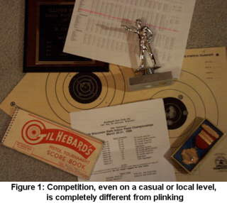
First, let's get one thing straight. A custom gun isn't important for Bullseye shooting. An extremely accurate gun is. Unfortunately, it seems that the only way to get an extremely accurate gun that suits a Bullseye shooter's needs is to have one built.Having said that, there's a simple answer with some complicated details to the "Why."
The simple answer is one word: "Competition."
"Competition" means this: You are no longer shooting just for fun (plinking). You are now shooting for score, no matter how casual the league or match may be. Against other shooters' scores and, most importantly, against your own previous scores (see figure 1).
Here are the complicated details:
Lots of folks say, "I'll use my stock gun, and when I can out-shoot IT, I'll get a custom." Well there is one thing right with this attitude, and three things wrong. The One Thing Right is, if you have absolutely no budget, at least you're participating in a great sport.
Wrong Thing #1: You will never be sure of how good you are when your equipment is questionable. How do you know when you are out-shooting your stock gun? When I test stock guns (all at 50 yards), they shoot groups from 4" (very rarely) to 14", most falling between 6" and 12". Let's say we put your stock gun into a Ransom Rest and find out it will group 8" at 50 yards.
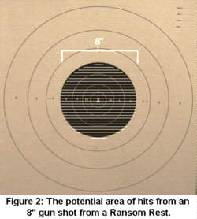
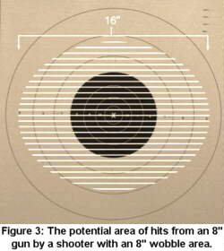
Well, that's 8-ring accuracy (see figure 2). Now, in a match, if you shoot an 80, you may have just shot as well as a Ransom Rest (and, in counterpoint, with a good gun, you might have shot a 100-10x), or you may have just gotten lucky. There is no way to tell. In addition, most beginners have a decent wobble which, when added to the 8" capability of the gun, gives a very wide hit area. If you have an 8" wobble and a 8" gun, you have a theoretical group sizes of 16," which can put shots in the 5-ring or anything inside it (see figure 3). You can theoretically shoot a 50 or a 100-10x without any difference in your technique.
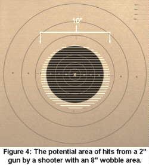
However, if your gun shoots 2" and you have the same 8" wobble, that's a 10" group and you will score at least a 70 and most likely a 85 when you figure in the law of averages (you'd have to be really unlucky for all your shots to break only at the outside edges of your wobble) (see figure 4).Wrong Thing #2: You can not develop the core skills you need using the wrong tools. You will never learn to throw a perfect spiral football pass using a tennis ball, no matter how much you practice. In theory, you can learn the perfect golf swing using lousy clubs, but you will never know you have the perfect swing because lousy clubs will spray the hits all over the golf course. The same with an inaccurate gun. With an 8" gun, even if you improve your wobble and reduce it to 6", you still have a theoretical spread of 14" and a score of from 60 to 100-10x. However, with a good gun, reducing your wobble like that would deliver at least a 90, and probably a 95, assuming your core skills are excellent.
That's another very important point to remember: A good gun will give you immediate feedback on your technique, good or bad. If you try, say, a different grip for your next target and shoot a 75 or a 95, that's instant, unquestionable feedback on the value of your change.
Wrong Thing #2a: You will develop bad habits with bad equipment. Only experts can pick up bad equipment and shoot it decently, and that's because they've already developed the core skills. How is a beginner going to learn proper trigger control with a 7-lb. trigger with a 1/4" of notchy travel? He or she will come up with strategies to compensate for bad equipment instead of improving their core skills.
Wrong Thing #3. You will become discouraged. No one can continue to shoot 20s and 30s next to people shooting 90s and 95s without a dip in morale, even with the nicest people next to you (and Bullseye shooters ARE the nicest people). Everyone needs reinforcement, and better scores are the best kind.
Bullseye is a great sport. Sure, go ahead and try it with a stock gun or -- better yet -- borrow a Bullseye gun (I guarantee you, if you show up at a club match and say you're interested in Bullseye but would like to try it first, someone there will lend you a good gun, good ammo and walk you through a match). But as soon as you decide you want to pursue this sport, figure out a way to upgrade your equipment.
Why your custom gun should come from not just any gunsmith, but an experienced BULLSEYE pistolsmith.
The same kind of gun (a Colt 1911) can be totally different when customized for different sports (for example, IPSC vs. Bullseye). Let me use an automotive analogy. You want a great NASCAR stock car. There's a guy in town that builds cars that have won championships - but in drag racing. You wouldn't go to him for a car that you need to run for 500 miles at max RPMs when he's known for building cars that run 5 seconds at max RPMs, even though both are built around V8s. And you shouldn't go to, for example, an IPSC pistolsmith for a Bullseye gun. (I'm comparing to IPSC 'smiths because the guns can seem pretty close -- I presume I don't have to tell you not to go to a riflesmith for a Bullseye pistol.) The different sports require totally different things from a gun, and the guns are used in totally different ways.
This is not to say IPSC 'smiths can't make an accurate 1911 .45. They can and do. But they don't shoot bullseye and don't work every day making Bullseye shooters happy. Often, they don't even understand Bullseye shooters. (I know my ex-wife didn't.) I do a lot of trigger jobs on guns from famous shops. The owners have sometimes sent them back numerous times for the trigger pull. Each time, the famous shop tries, but they don't know what to do because they've never held that gun out, gotten good sight alignment, started the trigger squeeze, watched the wobble slow and waited waited hoped hoped prayed oh please oh please oh please for the trigger to break. I've been shooting Bullseye for over 26 years. As the saying goes, "Been there, shot that." So I redo a lot of triggers on expensive guns. The owners are happy now, but I or any other reputable Bullseye pistolsmith could probably have built those guns right the first time, probably for less money, a shorter wait and less frustration. And they would be just as accurate, if not more so.
There's another aspect folks should know about when deciding between what I call "mass-produced customs" (MPCs) and a real custom Bullseye gun: Guarantees. No, not warrantees. Guarantees. Most MPCs come with a 30-day warranty, which in my mind is no warranty. I give a one-year guarantee, and so do most other small-shop Bullseye 'smiths. The mass producers are turning out dozens -- maybe hundreds of guns a week. I turn out one or maybe two. Every gun that goes through an MPC has four, five -- who knows how many guys working on it. Every gun that comes from my shop has one -- ME. I know what's inside that gun. I know what's outside that gun. Every gun that goes out of my shop has my name on it, and I know every customer that buys one. So if it's not right, I'll make it right, usually for no extra charge. And most other Bullseye pistolsmiths would do the same. And two years from now, when you call me or any other small-shop Bullseye pistolsmith, we'll remember you and your pistol.
One last reason to get your Bullseye pistol from a Bullseye pistolsmith: support. When you buy a gun from me, it's not just a business transaction. It's the beginning of a relationship. For instance, I and some of the other Bullseye 'smiths attend the large national matches every year, like Canton and Camp Perry. We're not there to compete or to sell guns. We're there to support our customers. 90-to-95% of my time at Perry is tuning and fixing guns. (The rest of the time is jawing with tire-kickers.) I sometimes put in 18-hour days there because my customers need their guns to perform there, even the ones I didn't build. The big shops (at least the ones that bother showing up) bring guns you can buy. Some just send shooting teams. Neither does you any good if the gun they sold you starts malfunctioning. I -- and the other Bullseye 'smiths who can make the trip -- bring tools. Think about that when you start shopping for a Bullseye pistol.
What a Bullseye pistolsmith actually does.
(Disclaimer: the opinions expressed here are mine. If other 'smiths agree fine. If other 'smiths disagree, fine too. It takes all kinds to make a horse race.)
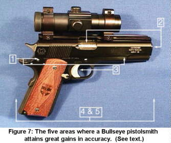
A Bullseye pistolsmith's job is to build the most accurate gun possible. To do that, we employ some tried and true methods and techniques, largely grouped into these five areas (see figure 7):1. Slide-to-frame fit
2. Barrel-to-slide fit
3. Trigger
4. Functionality/reliability
5. Comfort/personal preferences
When having a target pistol built, remember that when you start with good parts, you end up with a better finished product. Some frames and slides are questionable and it makes the gunsmith's job much more difficult -- trying to make everything work properly and meet their accuracy standards. (You're not going to win the Daytona 500 with the engine block out of your Daddy's pickup.)
For slide-to-frame fitting, I start by measuring all the parts that will mate (see figure 8 and 9). A key fit for accuracy in a 1911 is the bottom slide rail to the frame groove, and this has to be close. I go for a .002" clearance because, over 25 years, I've discovered that this gives the best compromise between tightness and functioning. After all, you need some place for oil and dirt to go when the gun starts to get dirty. I straighten and smooth the area by hand, with a fine-cut Swiss pillar file cut down to fit that area.
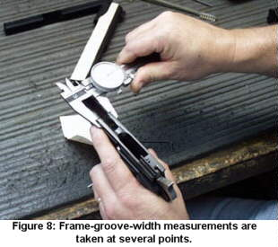 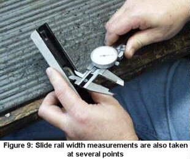
To control side-to-side play, I narrow the slide to almost the same width as the frame grove. (I use a personal technique that, while not be a high-tech secret, is something I'd rather not share.) Anyway, then I lap the slide to the frame using very fine abrasive and a lot of elbow grease. This results in a pretty consistent .002" clearance. That's it for the side-to-side movement.
Now I have to get rid of the up-and-down play. This is done by moving down the rails of the frame to fit the bottom rail of the slide, using the same .002" clearance (see figure 10), using judicious application of a hammer and precision gages to keep the bearing area consistent. I lap it once more with very fine abrasive and a lot of elbow grease.
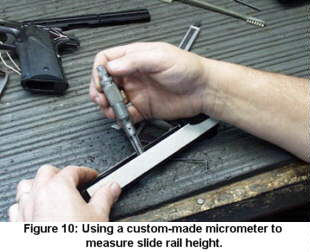 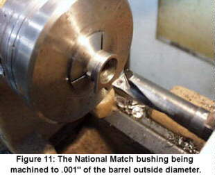
As for barrels, I use Kart or Bar-Sto. If a customer wants another brand, that's fine, but I can't guarantee two-inch accuracy at fifty yards (I usually still get it). I can get almost any barrel to shoot, but probably not as well as a Kart or Bar-Sto. More matches -- including National Championships -- have been won with Kart and Bar-Sto barrels than with any other brand, and it's very rare that you get one that won't shoot. They don't cost more than other brands and they're not in short supply, so I can't see why you'd go with another brand. But hey, if you want to, it's your nickel.
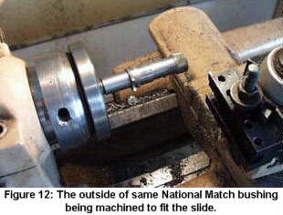 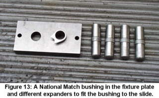
Barrel-to-slide fit is probably the most important area for accuracy. If you have a tight barrel-to-slide fit, the slide-to-frame fit can actually loosen and you won't notice a loss in accuracy with open sights or a slide-mounted scope. (If the frame-to-slide fit loosens and you have a frame-mounted scope, you may notice a loss in accuracy.) I fit the barrel in such a way that it will return each and every time to the same place in lock-up. First I fit the bushing to the barrel as close to .001" as possible (see figure 11 and 12). Then I fit the bushing to the slide by expanding the rear of the bushing -- where it's not supporting the barrel -- so you'll need a metal bushing wrench to get it on and off (see figure 13). Then I hand-fit the hood in both length and width to the slide (see figure 14 and 15), then hand-fit the underlugs (see figure 16). All of these areas must be very precise for a tight, consistent, long-lived total lock-up.
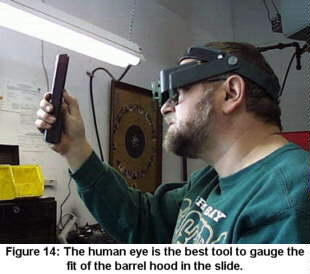 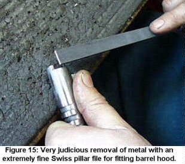
Next, and probably as important as the fit, is the trigger. A great trigger pull requires fitting of the trigger to the disconnector to the sear to the hammer, plus all the pins and springs that hold them in place. Everything bears on everything else, so a good trigger pull can be like a three-dimensional jigsaw puzzle (see figure 17). I prefer the spur hammers because I can get that beautiful, soft-feeling trigger pulls with them that my guns are known for. I don't know why, but the cool-looking commander hammers never seem to feel soft enough to suit me (they always feel more crisp and harder, even though they are the same weight). But if a customer likes and wants a sharp break or a Commander hammer, I'll use one.
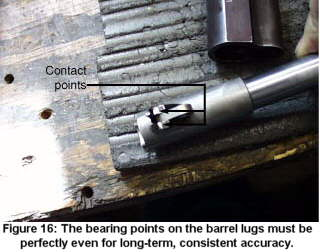 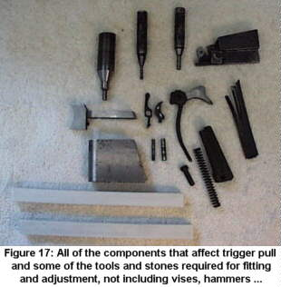
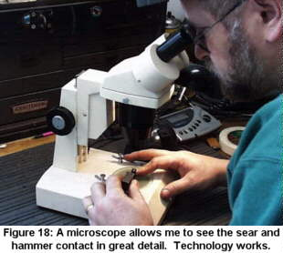
The sear-to-hammer contact is crucial. Perfect contact and angles take hand-stoning on special jigs of my own design, installation in the gun, testing, then disassembling and examining the parts under high magnification. The testing tells me, through my trigger finger, what's going on. The exam tells me why. I've found that a microscope is very helpful in getting perfect, bring-a-tear-to-your-eye triggers (see figure 18). I go through this whole process over and over, until the trigger is right.Which brings us back again to "Why a Bullseye pistolsmith?" Because you want an educated Bullseye trigger finger tuning your Bullseye trigger. For example, in IPSC, your trigger pull might take a fraction of a second and you'd use a two-handed hold 90% of the time. You'd have to be very good to notice, say, that the disconnector is binding ever-so-slightly in its tunnel as you pull the trigger, and the IPSC pistolsmith who built that gun might not ever notice it. It's just not that important in IPSC. But in Bullseye, that same trigger bind is as big as a house and even if a Marksman doesn't know there's anything wrong with the trigger, it's affecting his/her trigger pull and, therefore, his/her score. And I guarantee you, a trigger finger with just a few matches to its credit will know there's something wrong in there.
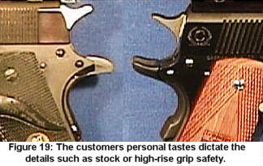
Then I do the details -- what the customer has specified in fittings and accessories: beavertail grip safety or not, front grip strap stippling or checkering, scope mount, finish, whatever (see figure 19 and 20). Finally, I function-fire the gun, a minimum of 50 Bullseye rounds. If it so much as hiccups, it gets torn completely down and the cause is found. I function-fire by hand, so the gun has the same resistance and movement as it would in a match. Finally, I accuracy-test it in a Ransom Rest, with several kinds of ammo, including factory match (using lots I know are accurate) and my best handloads. If it doesn't shoot between one and two inches at 50 yards, it gets torn down completely and gone though again. I send out all guns with a test targets and the load or Lot # of the ammo that shot the target (see figure 21).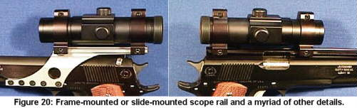
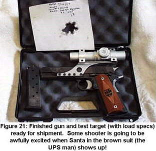
You might have noticed I've said "hand-fitted" a lot. I think that's the key to an exceptionally accurate and comfortable bullseye gun. Sure, CNC technology can make slides and frames that are precisely-mated. But it takes the eyes and hands and commitment of a craftsman to make a masterpiece -- a gun where everything fits and works together perfectly for the shooter. And that's what a Bullseye shooter wants and needs. The perfect tool matched to their needs, with which to hone their skills and win matches.When you get a gun from any nationally recognized Bullseye pistolsmith, it'll shoot. Why? Because our reputation is on the line. That's true for me, and it's true for any other dedicated bullseye gunsmith.
Resume
It always helps a reader to know the history of the writer, so that he/she may weigh the words knowing the experience of the speaker. So here's a brief history of myself, and why I think I can say these things.
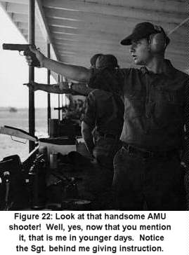
I began my shooting career in 1972 in Fort Hood, Texas and I began my gunsmithing career in 1973 in Killeen, Texas, at Scotty's Gunshop. I got out of the Army in 1973 and joined the Wisconsin National Guard and became part of their pistol team. I traveled to the Army Match with them in 1974. After the matches were over in 1974 I went back on active duty, and back to Fort Hood, Texas. That year I shot very well and won most matches that I shot. The next year, 1975, was my first year to go to Camp Perry. After shooting with the team from Fort Benning, they decided this is where I should be. I was stationed at Fort Benning in 1977 with the pistol team (see figure 22). I stayed with the pistol team till 1979. Things that I did while with the pistol team:I was a member of the 1978 and 1979 Interservice team champions. (the '79 score is still a record), and the winning 1979 National Trophy pistol team at Camp Perry (see figure 23). I made Distinguished in '77, the 2600 Club in '79, the President's 100 in '80 and '90 High Service Shooter at the Coral Gables match in '78. and part of the U.S. International Pistol Team.
In 1979 after Camp Perry, I was having some problems with my shooting elbow, so I asked if I could work as a pistolsmith in the AMU Custom Gun Shop. Bill Pullum, the shop officer, gave me that chance. For the first year, I was the Test Man. That means you test hundreds of lots of ammo to see if they meet AMU standards. You also test all the pistols being built with many lots of ammo and a Ransom Rest, to determine if the guns shoot and which lots of ammo each pistol likes (shoots well). Then particular lots of ammo are reserved for particular pistols. With XXX match pistols and XXX lots of ammo, you did a lot of testing. But you also learn a lot about what makes 45s shoot and function. In 1980, I got my own bench as a full-time pistolsmith. Sometimes it was hard for me to watch the bullets go down range and not be the one shooting them, so I tried to shoot two to three matches a year just for fun.
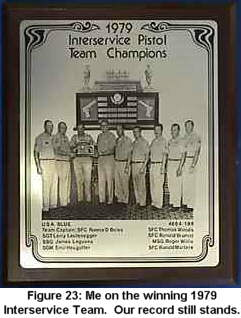
From 1981 to 1984, I was stationed in Hawaii with the 25th Inf. Div. Marksmanship Training Unit where I was a shooter, gunsmith and marksmanship instructor.In 1984, I returned to Fort Benning and back to the USAMU as a pistolsmith.
In 1988, a new Army team was formed for Action Pistol. I asked if I could try out for it. I was told I could participate as long as it didn't interfere with my pistolsmithing duties. I was allowed to shoot, but I had to practice on my own time (lunch hours and week ends). It was a little difficult because I was also appointed Noncommissioned Officer In Charge and Senior Pistolsmith of the AMU. But the honor of that position took the sting out of having to practice on my own time (like civilians have to).
Things that I accomplished in Action Pistol:
In 1988 at the Bianchi Cup, the USAMU Team took a third place finish. I was the winner of the Tin Cup Shoot in 1990 at Robertsville, Mo. In the 1990 Bianchi Cup, I took the High Service Trophy and made the top shoot-off.
One of my proudest achievements is being chosen as the Military gunsmith to represent the U.S. Military at the Conseil International Du Sport Militaire (CISM) in Lahti, Finland in '88, Santiago, Chile in '89, Fort Benning, Ga., in '90 and Jaji Nigeria, in '91. CISM is the equivalent of the military Olympics for all NATO countries.
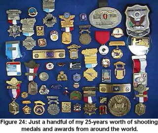
I've attended virtually every manufacturer training school offered, except maybe the Russian ones (but their team gunsmith trained me on the sly). From the Rock Island Arsenal for .45s and M14s, to Ruger, Colt, Smith & Wesson, Glock, Walther, Fienwekbau, FAS and Hammerli. I also attended the FBI Special Tactical Firearms school and the U.S. Army Sniper Marksmanship School.I've also been a instructor of Pistol Marksmanship for the Army Marksmanship Unit from '77 to '79, and from 1984 to 1992, a Marksmanship Instructor for the 25th Infantry Division from '81 to '84. I also attended the NRA Class C Coaches School in 1990 (see figure 24).
After retired from the Army, I tried a couple of other jobs, Machinist running CNC lathes and mills, and a barrel maker (making rifle and pistol barrels). I went back to school and received a Machine Tool Operator Diploma. In 1998, I became a co-holder of a patent for the Patternmaster Choke Tube.
But Bullseye is still my first love. Making guns that put bullet after bullet through the same hole. I've built a lot of guns that have done well. The Past National Champions that are or were customers of mine include John Smith, Charlie McGowen, James Laguana, Roger Willis, Eric Buljung, Tom Woods, Max Barrington, Bonnie Harmon and Kim Dyer, just to name a few. Check out the historical listings in your Perry book. You'll see those names. Past ISU National Champions that are my customers include a lot of those same folks, plus Ken and John McNally, Terry Anderson (Eric Buljung is also an Olympic Silver Medalist).
My most recent Customer-In-The-News is Jim Henderson. He was in the hunt for a while at Perry in 1998, but ended up second overall (also taking Army Reserve Champion). He's been up there the last few years, shooting over 2670 twice each year. I build and maintain all of his guns. (I also end up cleaning them most of the time, but that's another story for another time.)